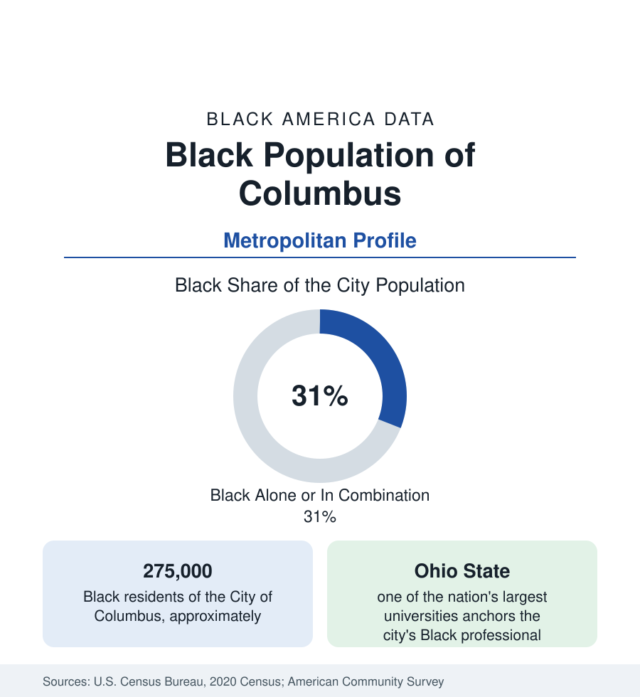

Black Cities
Black Columbus: The Capital City's East Side and Its Somali Chapter
Columbus holds about 275,000 Black residents — nearly a third of the city — the largest Black population of any Ohio city. The census profile.

Columbus holds about 275,000 Black residents — Black alone or in combination, roughly 31 percent of Ohio's capital city — the largest Black population of any city in Ohio, ahead of Cleveland and Cincinnati, in the state's largest and fastest-growing metro. Columbus's Black community pairs an old east-side heartland with one of the largest Somali populations in the United States, and its data present the state-capital pattern at big-city scale. This article profiles it in the census data.
The East Side and Bronzeville
The community's historic center is the near east side — the King-Lincoln district, Columbus's Bronzeville — where Mount Vernon Avenue's theaters, clubs, and businesses formed the Black commercial spine of the mid-twentieth century, and the surrounding neighborhoods (Olde Towne East, Milo-Grogan, Weinland Park at the district's edge) held the residential mass. The modern east side remains the population's center of gravity, extended through the East Side's postwar districts to the airport corridor and Whitehall (an independent enclave city now substantially Black and immigrant), Reynoldsburg, and the far-east suburbs. The north side (Linden, the Morse Road corridor) holds the second mass — including the Somali community's commercial spine — and the south and west sides smaller, older communities around the industrial belt.
The Somali Chapter
Columbus holds one of the two largest Somali populations in the United States — community estimates run to the tens of thousands, with the census's Somali-ancestry and birthplace counts the floor of the figure — settled from the 1990s onward through resettlement and secondary migration, concentrated in the north side's apartment corridors and spreading into the suburbs. Its institutions (the Global Mall's hundreds of Somali businesses on Morse Road, the mosques, the community organizations) constitute one of the most complete immigrant commercial ecosystems in the Midwest, and its second generation is now a defining cohort of the Columbus City Schools data — the district enrolls one of the largest African-immigrant student populations of any in the nation. Ethiopian, Eritrean, Ghanaian, and Nigerian communities layer with it; the metro's Black foreign-born share ranks with the gateway metros'.
The Capital Economy
Black Columbus works in the capital's economy: state government (the public-sector pattern at anchor scale), Ohio State University and the Wexner Medical Center (the metro's largest employer complex), the insurance headquarters (Nationwide and its peers), banking operations, logistics (the Rickenbacker's air-cargo and warehouse belt on the southeast side, whose workforce data mirror the transportation profile), and retail's corporate layer (the Columbus-based fashion and retail headquarters). The resulting Black income profile runs above the Ohio metros' older industrial cities — Columbus's Black median household income is the strongest of the state's big three — with the neighborhood spreads of the familiar form: the east-side historic tracts' difficulties against the suburban corridors' medians, in a city whose overall boom (the metro is Ohio's only large gainer) lifts the aggregate figures census by census.
Institutions
The institutional layer matches the scale: Capital University and Columbus State carry broad enrollment; Ohio State's Black student population is among the largest of any flagship; Wilberforce and Central State, the state's two HBCUs, sit within the metro's orbit at Xenia and Wilberforce (the state profile's account); the King Arts Complex anchors the Bronzeville heritage economy; and the city's Black church network spans the east side's historic congregations and the suburban megachurches. The city's politics reflect the data: Columbus has been led by Black mayors and council leadership across the modern era, in the state-capital pattern of Columbia and Jackson at larger scale.
Reading the Columbus Numbers
The health data complete the capital file: the city's Black outcomes in the state tables run better than the older industrial cities' on several measures — the income and insurance composition showing through — while the infant-health data of Franklin County (among the most studied county files in the state) keep the maternal-infant disparity in plain view at the center of an otherwise favorable profile.
Columbus is Ohio's present tense: the state's largest Black population, its strongest Black income data, its biggest immigrant chapter, in its only booming metro. Read it against Cleveland's profile for the state's two halves — the lake's industrial past and the capital's administrative future — and the Ohio section's story is the distance between them.
More in Black Cities
Black Atlanta: Population, Distribution, and Growth of a Black Metropolis
Metro Atlanta holds more than two million Black residents — roughly one in three, second only to New York. The suburban distribution, migration history, and composition of Black Atlanta in the census data.
Black New York: The Largest Black Population in America
The New York metropolitan area holds about 3.4 million Black residents — more than any metro in the nation — and the city itself about two million. The census profile.
Black Washington: The District and the Metro
The Washington metro holds about 1.6 million Black residents, and the District itself — long a majority-Black city — now records a Black share near 41 percent. The census profile.
Source: U.S. Census Bureau, 2020 Census; American Community Survey; Population Estimates Program.